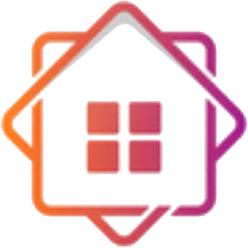

 Geron App
Abstract
Our challenge was to build a smart application which using gestures from users can connects to lots of different devices from different brands. This means you can control your lighting, TV, wireless socket switches, blinds, thermostat and stereo within the same mobile application. No more searching for remotes, no more switching applications. Easily turn on some nice music while adjusting the lights to fit the mood.Motivation
In the past few years, there has been a huge interest to bring smart home technology to the fore, Whether to increase a sense of security at home or save money on heating or electricity bills,This means you can control your lighting, TV, wireless socket switches, blinds, thermostat and stereo within the same mobile application. No more searching for remotes, no more switching applications. Easily turn on some nice music while adjusting the lights to fit the mood. consumers are realising that these systems not only provide convenience and simplify daily life, but also cost efficiencies at a time when family budgeting is critical. Almost all consumers are interested in smart home technology because they want their home to be more secure, cut costs of home energy bills and have the ability to monitor activity while away from home.
Technologies
- Artyom.js - A voice control - voice commands - speech recognition and speech synthesis javascript library.
- Sock.js - to inform clients about any changes in the system
- Stomp.js his library provides a STOMP client for Web browser (using Web Sockets)
- Angular.js It is a well known library written in JavaScript, used by us to play around with the data in the front-view
- Notify.js It's a jQuery plugin used to provide notifications when the state of the device is changes
- Spring Boot - help us to make a stand-alone, production-grade Spring based Applications that we just run.
- Gradle Build Tool - helps teams build, automate and deliver better software, faster
- Mongo DB - used for store data about devices and their status
User interaction
Interaction design aims to define and facilitate interaction between human beings and the application. Simplicity is our key-point, we wanted to offer a solution in order to satisfy the user's needs, to be reliable and intuitive.
The global interaction behavior of the system was designed to accept two methods of interaction:
- Using control by writing - the user interacts with the system by writting commands in the input area.
- Using voice control - the user uses his voice to control the system. There is an virtual assistant which is ready to listen the commands and offer feedback about the execution.
Interaction design patterns
- Notifications - when a device is turned on/off all members which are paired with that device will be notify about the change
- Filtering - complete for textbox area while you search a specific device
- Adaptable view - our website will be available on different platforms(mobile/desktop/tv)
- Continous scrolling - the list of available devices will continously show up while scrolling down
What Geron can really do
Geron is a responsive web application available on different devices (mobile, tablet, tv, computer). It is great at helping you to relax and have fun, too. Using our app you can:
- Control your TV with your voice.
- Turn on/off the smart vacuum cleaner, or the washing machine.
- Turn on/off the lights.
- Play music, using a radio or an audio system.
- Make a coffe, starting, of course, the coffe machine.
- Control all the connected devices from home
Conclusion
We succeded to implement an user-friendly application, with simple, easy to use functionalities, which offers an nice way to interract with devices.